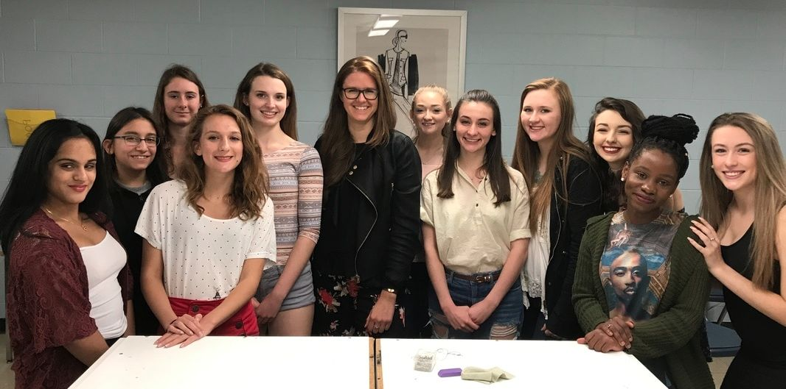

The Ivory Rite
Overview
Project Brief
I was approached by a Boston based author who was looking for a cover design and identity for her YA Novel, The Ivory Rite. With an unknown title at the time of project initiation, the brand identity and design of the novel was integral to launching Ms. Hartford's career as a novelist. She also requested website design services as well as headshots for her brand.
About Johanna Hartford
Johanna Hartford is a digital freelance writer who was born and raised in Massachusetts. She fell in love with literature at the age of 9, after memorizing Romeo & Juliet. When her bank account allows you can find her traveling the world with her best friend, but she loves New England in all seasons, and thinks that snow is magical. She does her best writing in yoga pants with the help of Gatsby, her live-in consultant, a particularly talented (yet marvelously ill-behaved) Australian Shepherd. Her writing has appeared on Cosmopolitan, HuffPost and MOGUL Inc. The Ivory Rite is her debut novel. Learn more about Johanna Hartford.
© photography by Keith March Mistler
Problem Statement
Creating an identity and having not read the novel before its release, this project relied heavily on storytelling from the author. The challenge was to create a branded identity for the YA novel, The Ivory Rite, which was at first an untitled novel. Ms. Hartford and I met multiple times through the course of one year to speak about her ideas, needs, and problems in order for us to come up with multiple solutions.
Market Research
Since the target audience of this novel included young adults, I sought out teenagers who would be interested in reading this novel. Working as a high school art teacher during the time of the design, I asked the school librarian to name a few students who she thought would give feedback regarding brand identity. I chose a small group of 4 students who felt comfortable giving me feedback and advice. We talked through a few designs with the author and met multiple times for feedback.
Competitor Analysis
Using other book covers as inspiration, I researched popular young adult novels. I asked myself "how did those designs correlate to the book content? What worked well and what did not work?" I was also intrigued at how book cover designs change over time with re-release or new publication. It seemed like the designs, rather than being timeless, relied heavily on current design trends.
- Hunger Games
- The Giver
- Divergent
- The Maze Runner
User Research
User Profiles
Sofia
Age: 14
Sofia is a freshman in high school in a suburban town in Massachusetts. She loves to read in her spare time. Dystopian novels are her favorite since they're so popular right now. She loves the Divergent series and is looking for a book with a strong female lead because she loves it when girls kick ass.
Jean
Age: 27
Jean is a 27 year old server at a local restaurant. She works at night, and when she comes home, she unwinds by reading YA novels. She finds them to be quick and enjoyable reads especially since the content is easy to consume.
Community Connection
Since young adult feedback was heavily utilized in the design for the branding and identity, Johanna Hartford requested that we work collaboratively with my fashion design class to create fashion illustrations for the novel's main protagonist. Ms. Hartford came to speak to the class and gave a presentation that included the book's synopsis as well as excerpts from the novel. Students were tasked with creating an iconic design based on the novel's fashions. Below are some of my personal favorites.
Final Design